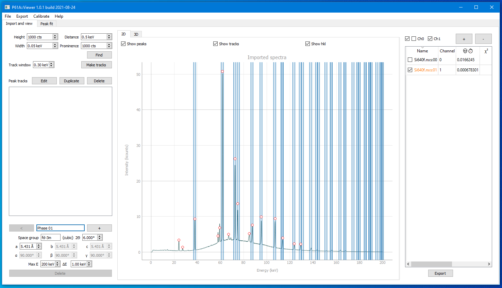
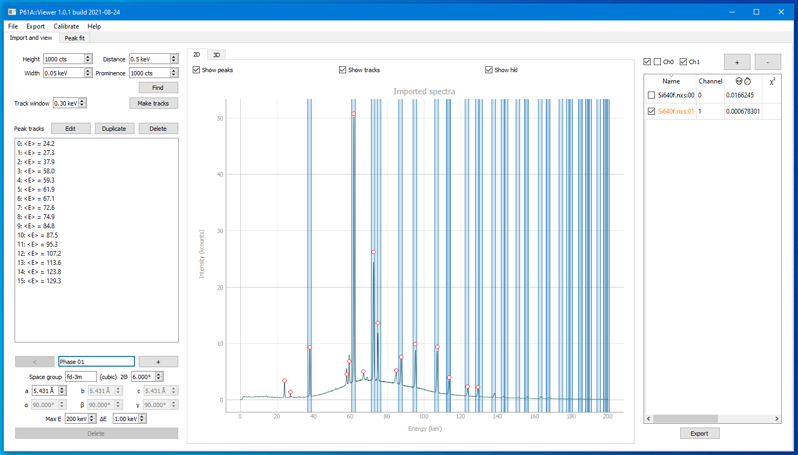

Calibrating 2Θ using a reference sample
To know the precise 2Θ value that was used during the experiment a calibration measurement is performed, usually with NIST 640f Si powder. An example of such measurement can be found here.
Import
After you have downloaded the file, open it in the Viewer with the + button.
We are going to be working with Channel 1, so you can uncheck or remove Channel 0 data.

Modelling peak positions
Prior to the analysis we knew which powder we had measured (NIST 640f in this case) and the approximate 2Θ angle of
Detector/Channel 1 (about 6°).
Using this knowledge we can set the parameters in the phase constructor in the bottom left corner:
Space group: fd-3m, a = 5.431 Å, 2Θ = 6°, and check the Show hkl checkbox above the plot.
Stripes should appear indicating the modelled peak positions.
{kind=link}
If you do not know the mentioned parameters, you can find the cell parameters and space group for your reference powder on the internet, and then just try to guess the 2Θ by putting in different values between 4°-20° and seeing if there are peaks where the model predicts them to be.
Please note that these peak positions are calculated using just the geometrical information about the phase. In some identified areas there may be no measured peaks due, for example, to the reflection being weak.
Identifying measured peak positions
Now we can go through the peak search and refinement procedure. It is described in detail in other tutorials, so the description here will be brief.
First, find the peaks. Adjust the search parameters until a few of the most prominent diffraction peaks are identified.
{kind=link}
Second, make tracks. Even though there is just one spectra open, this step can not be omitted.
{kind=link}
Third, go to the Peak fit tab, add the background (interpolation is preferable) and refine the
peak positions by pressing Fit this.

Now you have the precise measured peak positions. The more the better, although technically just one reflection is enough.
Calibrating 2Θ
If you go back to the Import and view tab, you will see the refined peak positions and the areas identifying where
the peaks are expected to be. If at least some of the measured peak positions fall within the correct areas,
you can try the Calibrate -> Calibrate 2Θ menu.

It will run a quick optimization of the 2Θ parameter in the phase constructor, until the measured peak positions are
best fitted. For this dataset the value should be around 2Θ = 5.982°.